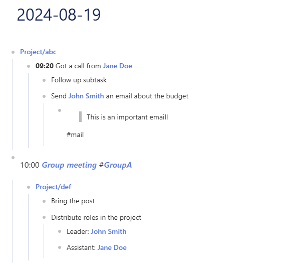
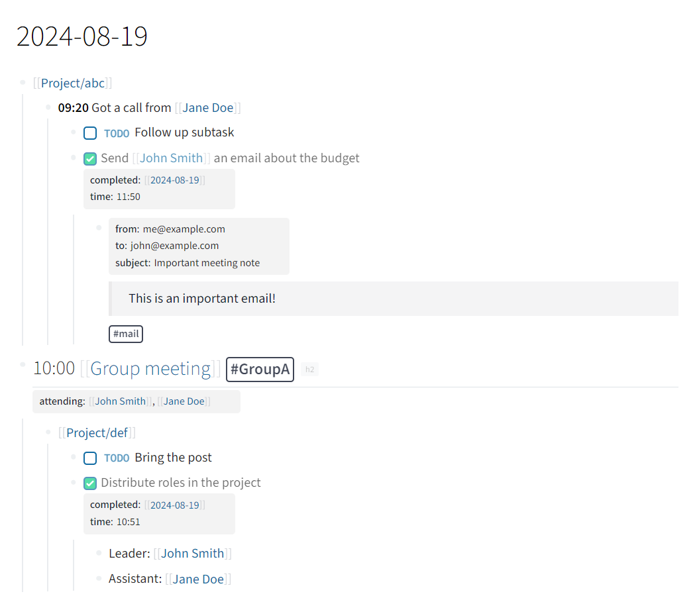

The goal of LogSeqR is to …
Installation
You can install the development version of LogSeqR like so:
if (!requireNamespace("devtools", quietly = TRUE))
install.packages("devtools")
devtools::install_github("andjar/LogSeqR", ref = "main")Example
This is a very basic example that converts a json exported from LogSeq to a json that can be imported to TiddlyWiki:
library("LogSeqR")
library("data.table")
#> Warning: package 'data.table' was built under R version 4.3.3
k <- import_from_json("test.json")
export_to_json(k, use_streams = TRUE)If you have Streams in your tiddlywiki, it will look like this:

Compared to LogSeq:

Note that properties are also exported, as well as tags and task status (however, they are not displayed by the default streams plugin).